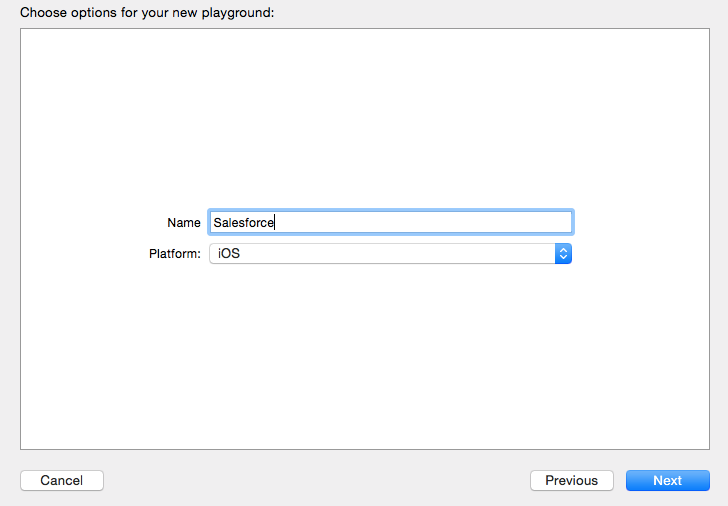
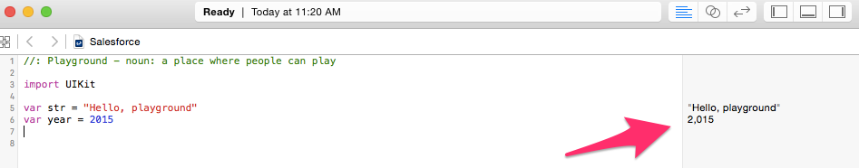
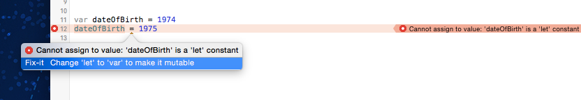
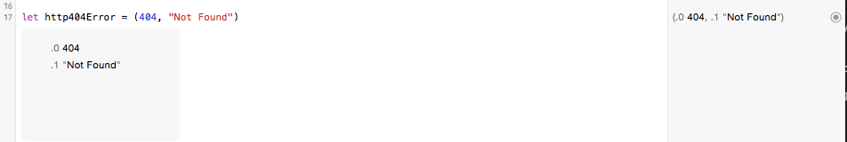

Learning Swift
A little over a year ago, Apple surprised the Apple developer community with a new programming language called Swift. Swift is a modern language with similar syntax to Ruby, JavaScript, and Node.js. It is incredibly easy to pick up and write apps. Up until now, you have focused on building your prototype and getting the Salesforce Mobile SDK for iOS configured in your app. Now it is time to write some code and bring your app to life.
This tutorial will introduce the basics of working with Swift with a particular focus on what you will need to build your first apps connecting to salesforce, and some of the differences of Swift when compared to Apex. For more detailed information on the Swift language, check out the official Swift Language Guide.
Playgrounds and Defining Variables
Let's start by creating a Playground. Playgrounds are like a notepad where you can write lines of code and execute them to see the results. They are kind of like the Execute Apex function of the Salesforce Developer Console. Go ahead and create one now. Give is a name "Salesforce"
Click on File->New->Playground
The first thing you will notice is a line
var str = "Hello, playground"
This is a variable with the assigned value of "Hello, playground". Swift is smart enough to know that the type of this variable is a string, based on it's asignment value. Go ahead and add another variable definition on the next line:
var year = 2015
This time you defined a variable of type Int with a value of 2015. Did you notice that as soon as you hit enter after completing this line, the code which you just wrote was executed and the results displayed in the gray area on the righthand side of the playground. 
Swift supports the standard variable types like Booleans, Decimals Arrays, Collections, etc which you can check out in the language guide referenced above. We will play with a few more types shortly, esp arrays which you will need to familiarize yourself with when working with the Mobile SDK. For now, however, let's dig a bit deeper into the definitions we just created. Go ahead and add another line to your playground:
year = 2016
After hitting enter, your code will execute with the results in the right hand margin. Notice that we have not had to add a semicolin (;) at the end of the line like in Apex? Swift doesn't require semicolins unless you have more than one statement on same line. Try adding the following:
year = 2017;str = "The year is"
We can change the values becasuse we defined these primitives as type 'var' (as in variable). Go ahead and add another defintion, but this time define it as a constant using the 'let' keyword. If you know that the value of sometihng is not going to change, setting it as a constant is not only more memory efficient (which is still important for mobile apps, and more so, wearable apps), but also ensures that you do not make errors during development and try to assign a value to something you shouldn't.
let dateOfBirth = 1974
Then, try and change the value. You will be presented with an error.
dateOfBirth = 1975
You should have noticed a red dot in the left hand margin of your playground. Xcode provides great interactive debugging assistance. Click on the red dot brings up a popup which will help you diagnose, and in many cases resolves, your error.
So far we have been able to get away with defining types when we initialize variables and constants. This is because Swift is a type safe language. You can also define the type of a variable or constant at the time of instantiation. I prefer this method as it is makes it very obvious what type something is. Try adding the following line:
let welcome : String = "Welcome"
Sometimes Swift makes things difficult for you compared to other languages. For example, in Apex, if I wanted to get the first 3 characters of ourour welcome string I could do the following:
welcome.substring(0,3)
But in Swift, we need to do the following
var index1 = welcome.startIndex.advancedBy(3) welcome.substringToIndex(index1)
The reason I call this out is that while Swift is similar to Apex, it is different and will take you some time to learn these differences. Stick with it though. Once you get the basics of Swift, and comfortable with XCode, I am sure you will love it!
Tuples
Touples is a construct which does not exist in Apex. It allows you to group multiple values into a single compound value. You can do this in Apex by creating custom class, but many times that is kind of overkill. Toubles in Swift however are incredibly easy to create and super handy to use. Add the following line to your Playground:
let http404Error = (404, "Not Found")
In this example, our tuple contains an Int and a String. You can mix any types together, and are not limited to just two entries. Go ahead and hover over the value of the tuple in the right hand grey margin error. You will see two small icons: an eye and an empty circle. The eye is a handy short cut for a quick look into the value of a variable or statement. The circle prints the value into the playground to make it easy for us to see. Click that one now.
Notice that beside the values in our tuple there are the numbers .0 and .1? This is how we can access the individual tuple field values. Try adding the following line and see what appears in the grey margin. While typing, notice the autocomplete that provides contextual information as you go - including the value of the variable.
http404Error.1
Optionals
Optionals are another language feature which is not present in Apex. (and doesn't even exist in Objective-C, the original language for writing iOS apps) An optional allows you to indicate that there may not be a value for the variable, but also allow you define something as having the possibility of returning nil (a null value in Swift). Take for example, you are querying salesforce to return external record ids. You could create an optional int like:
var externalId : Int?
Then within your code, you will never receive an error that you are trying to access a value of something that is not initialized. In this case, our optional will be set to nil. Optionals take some time to get used to, but once you are familar with them, it is very hard to imagine life without them.
Optionals also let you perform Optional Binding in if statements which is especially handy working with collections.
if let currId = externalId {
//perform some logic
}
Implicitly Unwrapped Optionals
Perhaps the most confusing piece of syntax to developers learning Swift is the Implicity Unwrapped Optional. Just the name itself sounds confusing, but it isn't too bad once you get your head around it. The Implicitly Unwrapped optional is defined by adding an exclamation mark (!) after a variable type. The purpose is to avoid the need to add a check to see if an optional has been assigned a value, because, based on the flow of your code, the variable will always have a value.
let possibleString: String? = "An optional string." let forcedString: String = possibleString! // requires an exclamation mark
Good news is that the compile does a good job of guiding you through when Optionals and Implicity Unwrapped Optionals are required. You will soon get the hang of them.
Assertions
Just like in Apex, it is best practice to test your code throughout. Swift includes test cases similar to Apex, which you can check out the docs for further info, and also assertion syntax for helpful debugging. Try adding the following code to your playground:
year = 1999
assert(year >= 2000, "Year must be greater than 2000")
print("hello this millenium")
You will receive strange error in the playground when this code executes. The reason is that the assertion statement fails, and halts the execution of the playground (which attempts to compile and run the entire playground each time you hit enter). The assertion statement attempts to stop this. Now change year to 2001 and see the difference. The playground executes printing our friendly message. You should use assertions when code must definiting be true to continue.
Collections
The last piece of syntax that we want to cover is working with Collections. Like any language, collections can get pretty complex. We will keep our intro focused on what to expect when working with the results of a query of data via the Salesforce Mobile SDK. Mobile SDK responses come in the form of Arrays and Dictionaries. Let's start with arrays:
//definition
var someInts = [Int]()
var shoppingList = ["Milk", "Eggs", "Cheese"]
//getting values
print(shoppingList[1])
//iterating
for item in shoppingList {
print(item)
}
Typically, a response from a request for query via the mobile SDK returns a NSArray (NSArray is a remnant of the fact the Mobile SDK is written in Objective-C, not Swift. We are seamlessly bridge between Objective-C and Swift, but sometimes class names still look at little odd. Just think of an NSArray as the same thing as an Array). To retrieve the response from a query you would perform the following:
let records = jsonResponse.objectForKey("records") as! NSArray
You should notice a few things familar here. We are using the Implicitly Unwrapped Optional because the code knows there has to be some value returned, although it may still be empty. In addition, we are defining records as a constant. This is best practice because the records are typically returned from Salesforce and 'disconnected'. If we are going to change anything, we likely want to do this in a separate variable. Defining the response as a constant means you can not accidently update the response and your code assumes the new values reflect what is in the cloud. The last thin you might notice is that we are calling objectForKey("records"). This means that our jsonResponse object is actually a Dictionary.
Dictionaries work very similar to Maps in Apex. You can access elements based on keys. (Note: Swift also contains Sets which are very similar to Sets in Apex too)
var prefixes: [String: String] = ["001": "Account", "005": "Users", "003" : "Contact", "00T" : "Task"] print(prefixes["003"])
Classes
Swift is an Object Orientated language just like Apex. You will create, and interact with classes all the time. Thankfully the syntax is very similar to Apex classes. We will define class that will be used to represent typical contact data. The syntax below should be becoming pretty familar to you by now. We will use this class to map contacts into rows in a table.
class ContactRowController: NSObject {
var contactId: String!
var firstName: String!
var lastName: String!
}
Putting it all together
Putting everything together, let's have a look at a real response from the Salesforce Mobile SDK and how we would perform one of the most typical tasks required in an iOS app - taking the data returned from Salesforce and adding it to a table. We are going to use our simple ContactRowController class to keep our code neat. Don't worry if some of the logic is a little too much right now. We just want to get you familar with what Swift code looks like. In further tutorials we will dig into data binding much more.
// Our query would be SELECT Id, FirstName, LastName from Contact LIMIT 10
for (index, record) in enumerate(results) {
let row = resultsTable.rowControllerAtIndex(index) as! ContactRowController
var s: NSDictionary = record as! NSDictionary
row.contactId = s["Id"] as? String
row.firstName = s["FirstName"] as? String
row.lastName = s["LastName"] as? String
}
Adding a little more logic based on our understanding of Strings, Maps and Optionals, we could extend our app a little with logic to display the record type:
class Contact : NSObject {
private let prefixes: [String: String] = ["001": "Account", "005": "Users", "003" : "Contact", "00T" : "Task"]
var contactId: String! {
didSet {
let index1 = contactId.startIndex.advancedBy(3)
let pref = contactId.substringToIndex(index1)
recordTypeName = prefixes[pref]
}
}
var firstName: String!
var lastName: String!
var recordTypeName: String?
}
Here we can see where the ? Optional comes in super handy. Even though we attempt to set the value of recordTypeNames, it still may be nil. You may also notice a new piece of syntax, the didSet method. This is one of my favorite features of Swift and is similar to accessor methods (also known as setters and getters) in Apex.
Summary
There you go; a quick overview of the Swift language and how, in many ways, it is similar to Apex. Swift is a different language though and will take you some time to become confortable with it. Throughout this tutorial, I've highlighted the portions of the language which are most relevant as you start using the Mobile SDK to access Salesforce. There is a lot more to learn about Swift and I highlight encourage you to read the Swift Language Gudie provided by Apple. In the next tutorial we are going to put some of our knowledge to work and start connecting our app to Salesforce and working with data. You can also access the Playground file we created during this tutorial right here.
Tweet